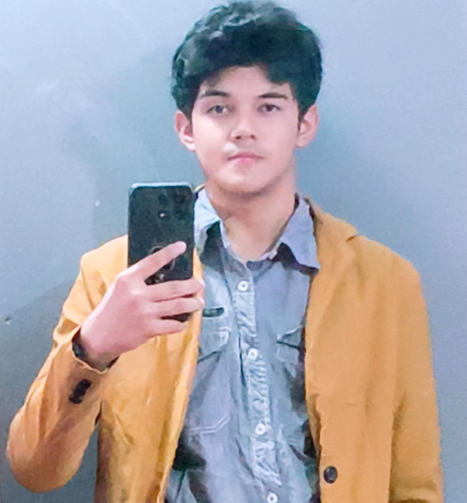

Especializacion en Ingenieria de Software. Graduado con honores.
Educacion secundaria completada.
Despachador de perchas del Tuti.
Capacitacion de SpeedRuns de Resident Evil Saga para ser todo un pro , actualmente en practica para el siguiente platino de la saga.
Reconocido por ser el fan mas viejo del estreamer argentino conocido como Bananirou.
| Nombre | Cargo/Profesion | Telefono | Correo electronico |
|---|---|---|---|
| Juan Perez | Gerente de Proyecto | +34 601 234 567 | jperez@empresa.com |
| Maria Gomez | Disenadora UI/UX | +34 602 345 678 | maria.g@empresa.com |
| Carlos Ramirez | Ingeniero de Software | +34 603 456 789 | carlos.r@correo.com |
Repositorio Git: Enlace al codigo fuente en GitHub